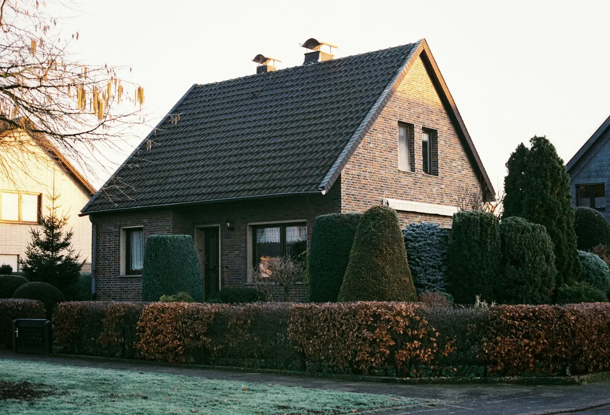
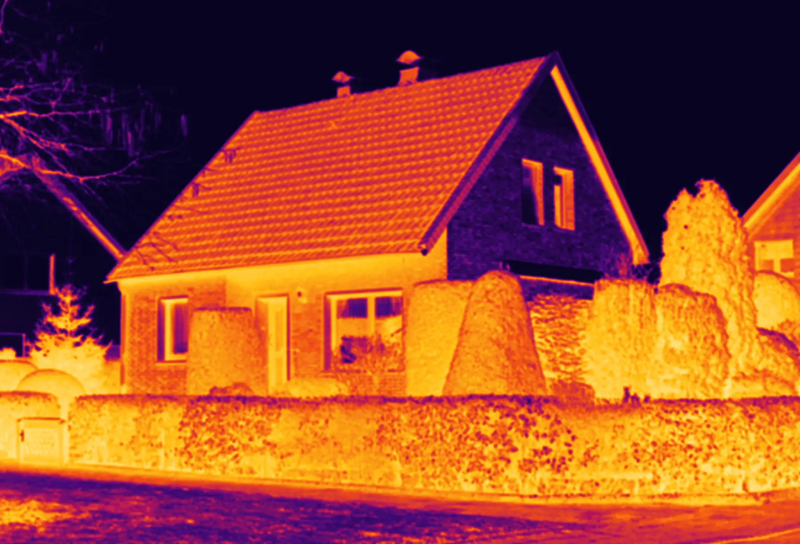
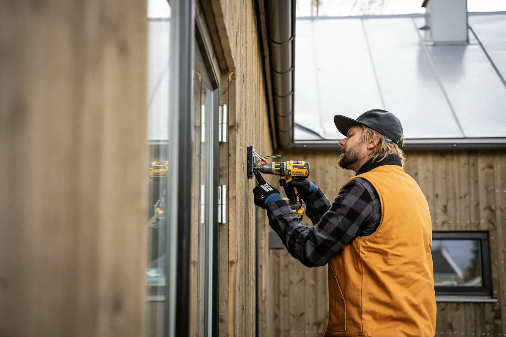
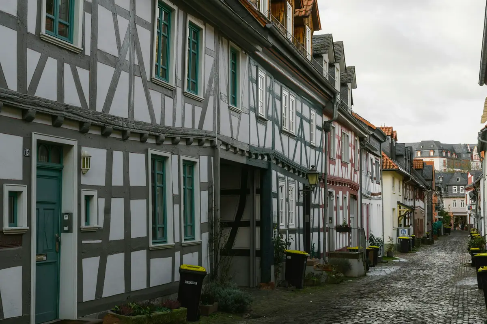
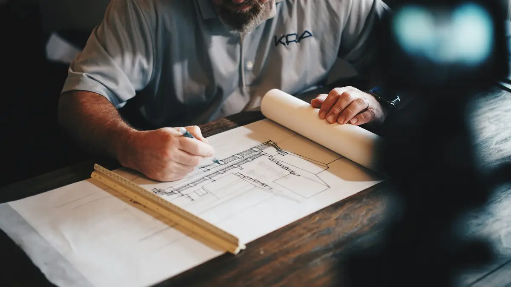

Energieberatung Regio Stolberg
Wir machen sichtbar, wo Ihr Haus Wärme verliert.
Unabhängige Energieberatung für Bestandsgebäude in Stolberg und der Region Aachen.
Erst die Aufnahme, dann die Berechnung.
Bauteile, U-Werte, Wärmebrücken, Anlagentechnik: sorgfältig erfasst, sonst ist jede Zahl danach unseriös.
Ein Fahrplan statt Bauchgefühl.
Der individuelle Sanierungsfahrplan zeigt, welche Maßnahme wann sinnvoll ist, was sie kostet und was sie spart.
Auch für Baudenkmale.
Energieausweise für denkmalgeschützte Wohngebäude, freie Beratung ohne Förderkorsett, Gutachten bei Feuchte und Schimmel.
Persönlich, vor Ort, ohne Subunternehmer.
Dipl.-Ing. Marijan Barlé, Diplom-Bauingenieur (RWTH Aachen), Gebäude-Energieberater (HWK).
Drei Themen, ein Ingenieur.
Unser Schwerpunkt ist die Beratung privater Eigentümer rund um Wärmeschutz, Feuchteschutz, Energieeffizienz und Sanierung. Wir sind weder an Handwerksbetriebe noch an Baufirmen gebunden.
Die Wärmebild-Lupe
Was mit bloßem Auge unsichtbar bleibt, zeigt die Thermografie: Wärmebrücken, Undichtigkeiten, schlecht gedämmte Bauteile. Bewegen Sie die Lupe über die Fassade.
Darstellung nachempfunden, kein echtes Wärmebild dieses Hauses.
Thermografie ansehenVom Ist-Zustand zum Effizienzhaus, Schritt für Schritt.
Jedes Gebäude bekommt eine Energieeffizienzklasse. Der individuelle Sanierungsfahrplan (iSFP) zeigt, mit welchen Maßnahmen Ihr Haus in eine bessere Klasse kommt, was sie kosten, was sie sparen und welche Förderung es dafür gibt. Sie haben 15 Jahre Zeit und keine Pflicht, alles umzusetzen.
Skala nach Anlage 10 Gebäudeenergiegesetz (GEG), Endenergiebedarf in kWh je Quadratmeter und Jahr.
SanierungsfahrplanDie Hausakte: alles, was wir für Ihr Gebäude tun.
Zehn Leistungen, ein Ansprechpartner. Beratung, Nachweise für Förderung und Gesetz, Diagnose bei Wärmeverlust und Feuchte.
Beratung
Energieberatung nach BAFA/KfWDie geförderte Vor-Ort-Beratung als Grundlage jeder Sanierung.Individueller SanierungsfahrplanMaßnahmen, Kosten, Einsparung und Förderung in einem Dokument.Freie EnergieberatungOhne Förderkorsett, angepasst an Ihre tatsächliche Nutzung.Nässe ist der größte Feind des Hauses.
Feuchte Wände verlieren Wärme, feuchte Dämmung verliert ihre Wirkung, und Schimmel macht krank. Nach einzeln ausgeführten Maßnahmen wie einem Fenstertausch tritt Schimmel oft dort auf, wo es vorher keinen gab. Ein Gutachten klärt die Ursache, auch gegenüber Handwerksfirmen.
FeuchteschutzDer Staat zahlt die Hälfte der Beratung.
Die Energieberatung durch einen Energieeffizienz-Experten wird vom BAFA gefördert: 50 % des förderfähigen Honorars, gedeckelt je nach Gebäudegröße. Seit dem 1. Juli 2023 gilt: gefördert wird nur zusammen mit einem individuellen Sanierungsfahrplan.
Stand März 2025. Maßgebend sind die aktuellen Vorgaben des BAFA (www.bafa.de) und der KfW (www.kfw.de). Das Honorar im Beispiel ist ein Richtwert.
Förderung im DetailBeispiel Einfamilienhaus
Stand März 2025 · ohne Gewähr

Ein Ingenieur, kein Vertrieb.
Dipl.-Ing. Marijan Barlé ist Diplom-Bauingenieur der RWTH Aachen, Statiker und Gebäude-Energieberater (HWK). Er führt jede Beratung selbst durch, besucht Sie vor Ort und nimmt sich Zeit. Keine Subunternehmer.
Ihr Anliegen auf einen Zettel.
Schreiben Sie uns kurz, worum es geht. Wir melden uns innerhalb von zwei Werktagen und besprechen, was für Ihr Gebäude sinnvoll ist.
- 0173 730 84 67
- energieberatung@regio-stolberg.de
- Kortumstraße 8, 52222 Stolberg